| 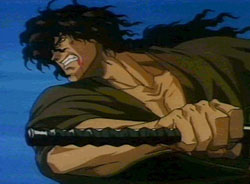 | Jubei is the main character of Ninja Scroll. He is a wandering Warrior, known as a Ronin which is a masterless samurai/ ninja. He makes a living doing odd jobs while traveling. As Ninja Scroll starts he is retrieving a sword that is worth 300 gold pieces for a poor village (for only 20 gold pieces). Jubei is a very intelligent and calculating person. He has very sharp wits and is a master of his sword technique. He's basically a perfectly well rounded warrior. No matter what the odds, Jubei will always fight with all of his heart if it's something he believes in (whether that be protecting Kagero or sending Gemma back to hell). Because of Jubei, Kagero learns that she is a person and even to begins to care for him and herself; something that she had never done before. He falls in love with Kagero... and even though he is poisoned and going to die, he will not treat Kagero as something to be used for personal gain. He would rather die than treat her that way, and accepts his fate unknowing to him that he has been cured. |
| 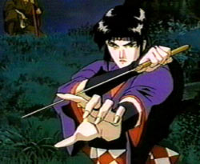 | Kagero is the only female warrior of the Koga Ninja that is sent to investigate the mysterious deaths in Shimota village due to an even more mysterious plague. Her main job is as a "poison taster" for her master's food. It turns out that she is totally immune to poison, due the fact that her blood itself is a deadly poison. Merely touching her could be fatal. Because of this, throughout her existance she has been thoroughly abused both mentally and physically, by all but Hanza and a few other Koga Ninja. Tessai's attack upon her is but one of the denegrating events of her life. Due to the fact that she is a female warrior, and her blood is poison, she has never been treated with any respect... just as an expendable warrior. Because of this she views herslf as of no worth and is on a crusade to prove her worth, while proclaiming her readiness (and sometimes willingness) to die. Fortunately Jubei treats her the way she deserved to be treated, as an invaluable friend, warrior and a beautiful woman. As shown by her facial expression, his seemingly cold words opened her eyes to a world she had never seen before. |
| 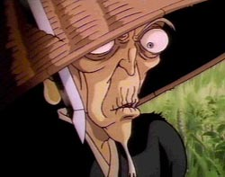 | Dakuan is a spy for the Tokugawa clan who is opposing the Shogun of the dark's Toyatome clan. He is a shrewd and underhanded (although not totally evil) wicked little man. Underestimating him because of his size and age would be the worst mistake you could make. He, like Jubei, is very clever, but unlike Jubei, is a little sadistic and more willing to watch people die to achieve his own personal goals. When Jubei gets poisoned, Dakuan could have told him how to recover... but he didn't. Instead he used Jubei's condition to force him into his employment. In fact, it's pretty certain that Dakuan threw the shuriken himself in order to insure Jubei's cooperation. Dakuan also has a very interesting escape technique which he uses to elude the extremely dealy shadow dwelling demon Shijima. He camoflauges himself much like a chameleon, and clings to a tree and acts as one of its branches. Overall he isn't a very nice man on the outside, but at times he is very human inside. In the end Jubei finally gives him what he deserves. He believes that manipulation of people is the way of the ninja; Jubei's philosophy is no where near this. |
| 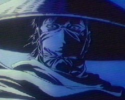 | Himuro Gemma is Jubei's arch nemesis, and has been even before being leader of the Devils of Kimon. It turns out that Gemma had betrayed Jubei and tricked Jubei's own clan into trying to kill him for being a traitor. In turn Jubei was forced to kill the Yamashiro clan in self defense, and then avenge their deaths by sending Gemma to hell. Gemma has the ability to re-generate his body parts, including his once severed head. Because of this power, Gemma's arrogance tells us that he thinks he is a god. Gemma is totally ruthless and wants Jubei to suffer. To regenerate takes total concentration and control of one's body, and Gemma has perfected it to an art form, so much so that he can also take sifferent forms. Gemma is basically immortal because of his strange ability... and that is why he is the leader of the Devils of Kimon. With their help he hopes to become the "Shogun of the Dark", the ruthless new leader of the Japanese government who will rule the country with terror from the shadows. It's ironic that he's working for the Shogun of the dark, while he intended to betray him all along. A Devil in every sense of the word. |
| 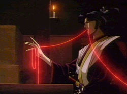 | Yurimaru is second in command of the eight Devils. He is ruthless, but very non-threatening in his composure, which is very feminine and proper to say the least. But as with much in Ninja Scroll, underestimating his power would be a grave mistake. Even Tessai listens to him, and Tessai is more than a threatening character. His special ability is that of electrocuting his enemies with energy generated in his body. He uses little wires (resembling the line attached to Jubei's sword, but with the abiity to disintegrate) and is very accurate with them. He desires to be Gemma's lover... and is very jealous of Benisato, whom Gemma seems to prefer. Zakuro has fallen in love with him, but he has absolutely no desire for her and treats her lower than dirt. As with those with power, Yurimaru is exemplary in his display of arrogance and has one hell of a superiority complex. |
| 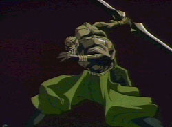 | Tessai is the Devil responsible for killing most of the Koga ninja team with Yurimaru. His special ability is to turn his entire body into stone, making him almost totally impervious. Not to mention that he is a mammoth. Along with the impervious skin and gargantuan size he has an extremely bad disposition and he's not afraid to show it. Tessai had the mispleasure of being the first to meet Jubei, and Jubei wasn't too lucky either. Jubei saved Kagero from being attacked by Tessai, and that is something that this Devil would not soon forget. Tessai's weapon of choice is an absolutely humungous double sided double edged sword that he hurls through the air like a boomerang, and he almost always seems to catch it. |
| 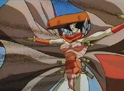 | Zakuro is a very vengeful and powerful woman. She also has the ability to make living things, actually once living things, explode. In atcion, we see an animated, armless, dead Hanza walking at the top of a mountain. Kagero runs to him, and Jubei senses the gun powder, barely saving them from the explosion, only to be saved by the awe inspiring mujuro. Unfortunately for Zakuro, she has fallen in love with Yurimaru, but he pays no attention to her. In fact he treats her like dirt. Because of this she has become very bitter and wishes to seek revenge against him. She is also arrogant, and has a very short fuse, which aids Jubei in diffusing this evil woman. |
| 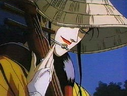 | Benisato's ability is the control of snakes, that actually come from her body in many shapes and forms. She also has the ability to shed her skin like one. We first see her in action when Jubei is trying to recover from his battle with Tessai. She appears naked in front of him, revealing a body covered in serpentine tatoos, tatoos that come to life and try to kill Jubei. He easily defeats the snakes and gets a hold of her, only to see that she is merely a cast-off skin left as a decoy. She is Gemma's lover and the devil that discovered who Jubei was after Tesai left an imprint of Jubei's face in his hand. Also in her power is the ability to create cast-off skin "puppets" that she controls. We see this in the old woman praying at the temple. She is very taunting about her relationship with Gemma to Yurimaru, which is reason for the "tension" between them. |
| 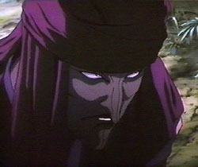 | Shijima has many strange abilities. He can control both the living and the dead like they were puppets, and can travel freely through shadows. He can also create an illusion which multiplies himself into "decoys" which can be very confusing in battle. His main weapon is his extremely powerful and lightning fast mechanical claw which glides through the shadows as easily as he does. He throws it at Dakuwan, and is amazed that he avoided it (it is probable that no one had before). All it did was pin his clothes to a tree. Although he proves to be extremely hard to catch, he doesn't do much fighting with Jubei as he'd much rather use a puppet and try to hide. |
| 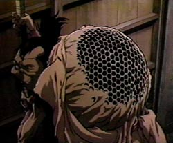 | Mushizo has a very strange ability to control wasps. Not only can he talk with and command them, in Jubei's fight with him we see that Mushizo is a walking hive. Mushizo's weapon of choice is a 2 pronged pitch fork type weapon, and has a deadly "throat needle" which he can spit out of his mouth. The only thing is he really shouldn't go near water. Although not the most amazing Devil, he is the Devil who reveals to Jubei the existance of the once very dead Gemma. And if that weren't bad enough, he is the leader of the Devils of Kimon. |
| 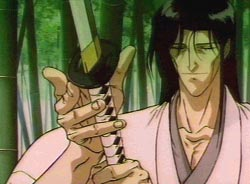 | Mujuro is an amazing swordsman, in fact probably one of the best ever... even though he is completely blind. He is also apparently very strong, due to the fact that he was supporting Jubei's sword when he and Kagero were scaling a cliff. He saved them so that he might have the chance to fight Jubei, and win (or so he hoped!). In order to avoid losing to him, Jubei had to eliminate all noise that he was making... one sound and it was all over. He was also amazingly fast and even fought Jubei in a forest, running through the trees! |